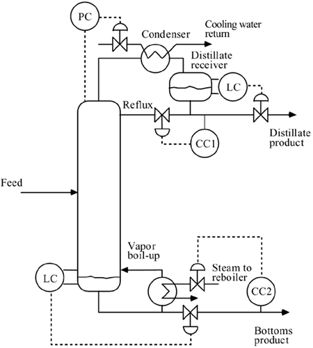
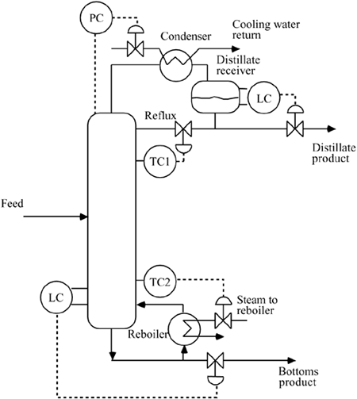
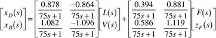

| [ Team LiB ] |
|
M13.1 Description of Distillation ControlA schematic diagram of a typical binary distillation column control strategy is shown in Figure M13-1. Notice that there are five measured variables (pressure, distillate receiver level, base level, distillate composition, and bottoms composition) and five manipulated variables (condenser heat duty, reflux flow rate, distillate flow rate, bottoms flow rate, and reboiler heat duty). In addition, if the feed to the column is regulated, then there is an additional measurement (feed flow rate) and manipulated input (also feed flow rate or valve position). Normally, it is assumed that the pressure is controlled by manipulating the condenser heat duty (or the flow of cooling water to the condenser), that the distillate receiver level is controlled by manipulating the distillate product flow rate, and that the base level is controlled by manipulating the bottoms product flow rate. It is also assumed that these loops are tightly tuned, and the process outputs are "perfectly controlled" at their setpoint values. Figure M13-1. Dual composition control of a distillation column. For a number of reasons, composition sensors may not be installed or many not be in service. The distillate and bottoms streams compositions can be inferred by measuring the temperatures of trays near each end of the column, as shown in Figure M13-2. The tray temperature measurement dynamics are typically more rapid than the product stream composition measurements, so tighter disturbance rejection may be possible with this strategy. For convenience, we assume throughout the rest of this module that composition measurements are available. The analysis and design techniques presented in this module can easily be used for the temperature-control system shown in Figure M13-2. Figure M13-2. Dual temperature control of a distillation column. Simplified ModelThe column studied is a 41-stage binary separation. For ease of modeling, it is assumed that the manipulated inputs are reflux flow rate and vapor boil-up rate. In practice, the steam flow rate to the reboiler would be manipulated, but it is related to the vapor boil-up by the heats of vaporization of the bottoms stream and the steam. An input-output transfer function model for the dual composition control strategy is  The outputs are the distillate (xD) and bottoms (xB) composition, in mole fraction of light component. The manipulated inputs are the reflux (L) and vapor boil-up (V) rates, in kilomoles per minute. The disturbance inputs are feed flow rate (F, kmol/minute) and feed light component mole fraction (zF). The unit of time is minutes. The steady-state compositions are 0.99 and 0.01 mole fraction light component for the distillate and bottoms product streams, respectively. The steady-state manipulated inputs (reflux and vapor flow rates) are 2.706 and 3.206 kmol/minute, respectively. The feed to the column is 1 kmol/minute, with a feed composition of 0.5 mole fraction light component and a feed quality of 1. |
| [ Team LiB ] |
|